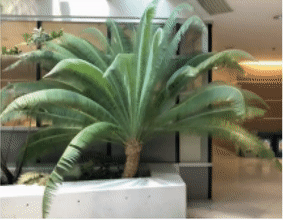
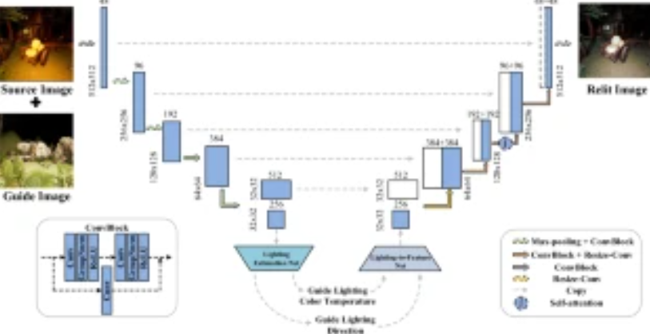

|
|
BiographyI am currently a 3rd-Year Ph.D. student in the School of Computer Science of Northwestern Polytechnical University (NPU), supervised by Prof. Qing Wang. My research interests are in computer vision and computational photography, in particular in Neural Radiance Fields (NeRF), Novel View Synthesis, Neural Camera Model . Currently, I'm a research intern in the Visual Computing Center@Tencent AI Lab to work with Qi Zhang. I received my Bachelor Degree from the School of Computer Science of NPU in 2020. |
News
[2023/02/28] Two first-author papers LIRF and NeuCam got accepted by CVPR 2023! 🎉🎉[2022/06/08] The code of HDR-NeRF has been released.
[2022/03/03] One first-author papers HDR-NeRF got accepted by CVPR 2022! 🎉
[2021/08/14] I started an internship at Tencent AI Lab.
Publications

|
Inverting the Imaging Process by Learning an Implicit Camera Model
Xin Huang, Qi Zhang, Ying Feng, Hongdong Li, Qing Wang Computer Vision and Pattern Recognition 2023 (CVPR 2023) Home Code arXiv Video |
|  |
Local Implicit Ray Function for Generalizable Radiance Field Representation
Xin Huang, Qi Zhang, Ying Feng, Xiaoyu Li, Xuan Wang, Qing Wang Computer Vision and Pattern Recognition 2023 (CVPR 2023) Home Code arXiv Video |

|
HDR-NeRF: High Dynamic Range Neural Radiance Fields
Xin Huang, Qi Zhang, Ying Feng, Hongdong Li, Xuan Wang, Qing Wang Computer Vision and Pattern Recognition 2022 (CVPR 2022) Home Code arXiv Video |

|
Stereo Unstructured Magnification: Multiple Homography Image for View Synthesis
Qi Zhang, Xin Huang, Ying Feng, Xue Wang, Hongdong Li, Qing Wang arXiv 2022 arXiv |
|  |
SA-AE for Any-to-Any Relighting
Zhongyun Hu, Xin Huang, Yaning Li, Qing Wang European Conference on Computer Vision Workshops: (ECCV 2020 Workshops) Paper |